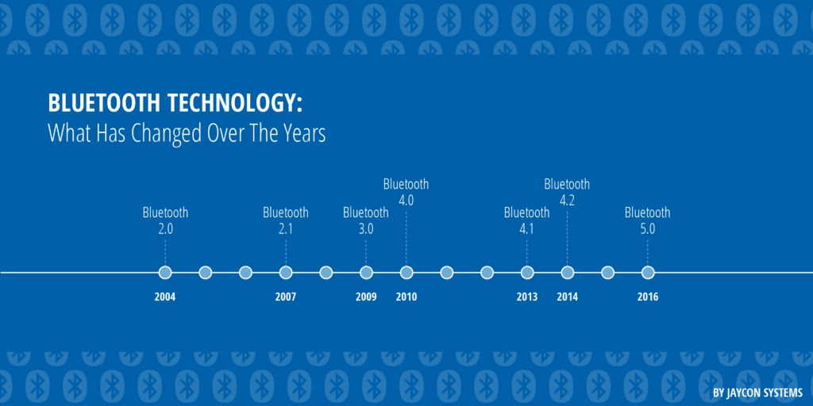
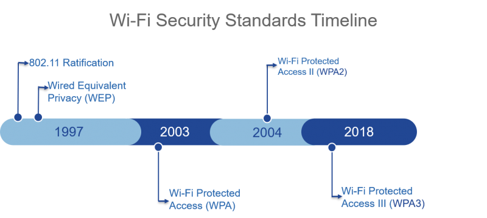
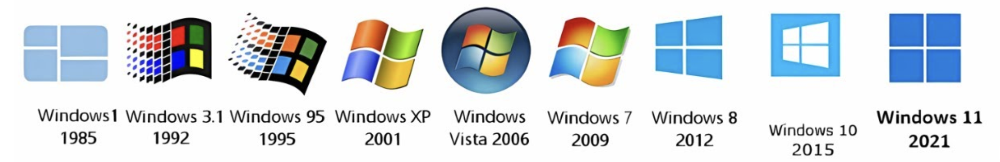
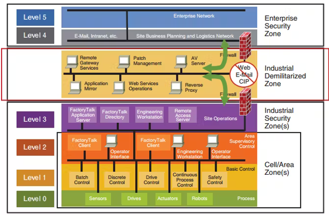

ICS/OT/IoT Security: challenges and protection strategies¶

It is time to revisit the ICS/OT world, as it has unique characteristics that influence its processes and tools.
First, I categorize this broad field into three groups:
- Systems localized within a confined area (e.g., a building or campus).
- Systems geographically distributed but accessible through protected or dedicated networks (SCADA systems often fall into this category).
- Systems geographically distributed and connected to the Internet without additional controls (IoT systems often fall into this category).
I chose this classification because, as we will see in the following posts, it dictates our ability to mitigate risks with additional security measures. Other categorizations are useful too (for example, one based on risk), but this is the one I use as a starting point.
In my experience, most ICS/OT/IoT systems have a longer lifespan than the support period of their individual components. This is crucial when planning a realistic strategy. Even though some regulations require components to be upgradable, we will inevitably face situations where we need to protect components that are no longer sold, supported or maintained.
Lifespan vs. Support Duration¶
ICS/OT/IoT systems often stay operational for longer than the manufacturers of their components anticipated. In other words, the components (particularly the software, but not only) are no longer supported, yet the integrated system is still in use.
Anyone familiar with the industrial, medical, maritime or oil & gas sectors (and I would add banking) sees this daily: systems are built on components such as Windows and remain active well beyond the end of their support period. This is unavoidable for three reasons:
- These systems are generally untouchable: no changes or updates are permitted because their effects are unknown. In some cases, vendors strongly advised me against updating IEC 62443-certified products, even though the standard allows it.
- Many of these systems have a very high acquisition cost, in the millions or tens of millions. Decommissioning or even a simple refit is an unjustifiable cost for a system that still does the work it was bought for.
- I have often encountered operational systems supplied by defunct companies, with no support available. Here too, the cost of a new system is unjustifiable.
The three points above mainly stem from the approach of the companies and people who design such systems. They are built to perform their tasks safely, even under stress. When we started talking about Industry 4.0 and connecting systems designed to work in isolation to an IP network, however, we introduced a new risk: cyber risk.
In conversations with suppliers and customers of ICS/OT/IoT systems, I realize that cyber risk is often not even considered. As a professional, I find some topological choices rather peculiar.
Manufacturers and integrators still need to grasp the implications of putting fragile technologies (from a cyber perspective) on IP and connecting them to the Internet.
The regulatory world is moving in a certain direction (see NIS, the machinery regulation, IMO). Will we finally see concrete results? Personally, I am not so optimistic.
Component Lifespan¶
Regulations and reality are one thing. Now let's look at some examples showing that the lifespan of a component is inevitably shorter than the lifespan of the system. Systems keep being used until they fail and repairs become more expensive than buying a new system.
Bluetooth¶
In recent years, I have noticed a preference for Bluetooth in the ICS world, because it simplifies reconfiguration activities. Specifically, Bluetooth is used to send some non-emergency control commands remotely. We should consider the risks introduced by a wireless protocol, but for now let's focus on the protocol releases. A new Bluetooth standard is released every 2-3 years. In an industrial system with a lifespan of 15 years, we can therefore find very old and potentially vulnerable protocol releases.

WiFi¶
A similar discussion applies to WiFi, which has been used in ICS for years to manage mobile parts. In just under 20 years, four security standards (WEP, WPA, WPA2 and WPA3) were introduced one after the other to address security issues.
Today, it is quite common to find ICS systems based on WEP, where the WiFi network is an extension of the wired field network.

HMI¶
Even today, almost all the HMI systems I encounter are based on Microsoft Windows. Starting from Windows XP, we have seen 6 different versions in 23 years, roughly one every 4 years. It is just as easy to find ICS/OT systems still running Windows XP.

As recent history has shown, some systems run even older versions, released more than 30 years ago, and being old does not necessarily mean they need to be replaced.
Ubuntu is fairly widespread too, and an LTS release has a lifespan of about 5 years. Since no development is aligned with the latest release, a system that is around 3 years old is already out of support. This affects not only ICS but typically OT and IoT systems as well.
Vulnerability Management¶
Managing vulnerabilities does not necessarily mean updating. It means managing risk, which we can do by implementing additional security measures.
I generally advise against running vulnerability assessments on ICS/OT components. Here is why:
- ICS/OT systems are extremely fragile, and it is highly likely (I would say certain) that a VA activity will negatively impact them.
- ICS/OT systems are generally untouchable. Even if we find vulnerabilities, we cannot mitigate them with updates or EDR.
- As mentioned, ICS/OT systems have a long lifespan, so we will almost certainly find vulnerabilities due to obsolete systems.
The point is that in ICS/OT environments there will almost certainly be severe, unpatchable vulnerabilities. In my experience this assumption has always held, and we can build our strategy on it.
In the IoT world we can draw similar conclusions, with one complication: IoT systems are generally connected directly to the Internet, with all the consequences that follow.
Defense Strategies¶
We have established that ICS/OT systems are vulnerable and unpatchable. Our vulnerability management plan cannot rely on patching. Instead, we need to build a series of layers that reduce risk adequately.
I start from the so-called Purdue model, which gives us a foundation for approaching the problem correctly. In general, there should be no direct traffic from OT networks to IT/Internet networks and vice versa. I say "should" because, in my experience, the Purdue model is often not applicable today. I often find ICS/OT systems with contractual (not technical) requirements for direct Internet access.

My approach today is to create a particularly stringent security perimeter around the ICS/OT environment, inspired by the concept of ZTA (Zero Trust Architecture). A combination of firewalls and IDS lets me control access to ICS/OT systems and monitor anomalies within the networks. It may sound simple, but consider that:
- Many ICS/OT systems reside together on large networks (I have seen thousands of IPs on a single 10.0.0.0/8 network).
- What we see is not necessarily what is there: numerous 3G/4G/5G gateways implement an independent, invisible Internet access point directly into the ICS/OT network.
- In many environments, VPN terminators are installed by contract to enable remote assistance (and, once identified, these might be the lesser evil).
ICS/OT security, therefore, starts with an assessment to understand how chaotic the situation is and which paths exist.
Network Segmentation¶
We have seen some critical aspects of a proper security strategy. One of them deserves further discussion, even though in most cases it is not feasible.
ICS/OT systems within a company often reside on a single, large network. Compromising one component exposes all systems to the same risk. We also know that ICS/OT systems are untouchable, so changing the addressing scheme is not an option. In this case, technologies that segment L2 networks transparently can help. Personally, I have experience with the VLAN Insertion feature offered by Palo Alto Networks. Other vendors have similar implementations with the same goal: segmenting or micro-segmenting an L2 network transparently.
I consider this measure impractical in most cases because the production world is often the responsibility of an OT Manager who comes from the OT world, not from IT. I notice a certain skepticism, if not fear, when "IT technologies" are proposed in OT. The OT Manager opposes the change and shifts the responsibility for any production downtime onto whoever alters the topology.
In some cases, I have seen people sit down and look for a compromise that satisfies everyone. In many cases, however, nobody wants to take the risk of changing the status quo, and everything stays the same.
Network Access¶
We discussed how to segment ICS networks to reduce the impact of a breach. Now let's touch on a topic that is both trendy and delicate. The idea behind NAC solutions is to enable network access for permitted devices while keeping out all the others. There are some important considerations to keep in mind:
- A device that is allowed access can still be compromised.
- Today's NAC solutions rely on the 802.1x protocol, plus a series of compromises when this protocol cannot be used.
In the ICS world, most devices (if not all) do not support 802.1x, which requires compromises such as MAB (MAC Authentication Bypass). We must also consider the risk posed by "silent" devices, those that receive traffic more than they send it, which might require further compromises.
I am not demonizing NAC solutions, but I want to stress that security is built in layers, and NAC is just one layer. Like any security measure, it has its own impacts. You can find more reflections on this topic in the "802.1x bypass" episode of the podcast I host with Rocco Sicilia.
Code Security¶
Finally, I want to address a topic that is still very niche, unfortunately: the security of code in the context of PLCs. Some PLC vulnerabilities are caused by how the PLCs are programmed. We can prevent them by writing correct code. This is not my area of expertise, so I leave you with the Top 20 Secure PLC Coding Practices and encourage you to follow Sarah Fluchs on LinkedIn.